Chapter 3 Data Visualization with ggplot2
Learning Objectives
- Bind a data frame to a plot
- Select variables to be plotted and variables to define the presentation such as size, shape, color, transparency, etc. by defining aesthetics (
aes)- Add a graphical representation of the data in the plot (points, lines, bars) adding “geoms” layers
- Produce scatter plots, barplots, boxplots, and line plots using ggplot.
- Modify the aesthetics for the entire plot as well as for individual “geoms” layers
- Modify plot elements (labels, text, scale, orientation)
- Group observations by a factor variable
- Break up plot into multiple panels (facetting)
- Apply ggplot themes and create and apply customized themes
- Save a plot created by ggplot as an image
We start by loading the required packages. ggplot2 is included in the tidyverse package.
library(tidyverse)If not still in the workspace, load the data we saved in the previous lesson.
MS_demographic <- read.csv('data_output/MS_demographic.csv')(If you need to, you can also download the data from here: https://github.com/cengel/R-data-wrangling/raw/master/data_output/MS_demographic.csv)
3.1 Plotting with ggplot2
ggplot2 is a plotting package that makes it simple to create complex plots from data in a data frame. It provides a more programmatic interface for specifying what variables to plot, how they are displayed, and general visual properties, so we only need minimal changes if the underlying data change or if we decide to change from a bar plot to a scatterplot. This helps in creating publication quality plots with minimal amounts of adjustments and tweaking.
ggplot generally likes data in the ‘long’ format: i.e., a column for every dimension, and a row for every observation. Well structured data will save you lots of time when making figures with ggplot.
ggplot graphics are built step by step by adding new elements using the + sign.
To build a ggplot we need to:
- bind the plot to a specific data frame using the
dataargument
ggplot(data = MS_demographic)- define aesthetics (
aes), by selecting the variables to be plotted and the variables to define the presentation such as plotting size, shape color, etc.
ggplot(data = MS_demographic, aes(x = pct_black_stopped, y = pct_white_stopped))- add “geoms” – a graphical representation of the data in the plot (points, lines, bars). To add a geom to the plot use
+operator
ggplot(data = MS_demographic, aes(x = pct_black_stopped, y = pct_white_stopped)) +
geom_point()
The + in the ggplot2 package is particularly useful because it allows you to modify existing ggplot objects. This means you can easily set up plot “templates” and conveniently explore different types of plots, so the above plot can also be generated with code like this:
# Assign plot to a variable
MS_plot <- ggplot(data = MS_demographic, aes(x = pct_black_stopped, y = pct_white_stopped))
# Draw the plot
MS_plot + geom_point()Notes:
- Any parameters you set in the
ggplot()function can be seen by any geom layers that you add (i.e., these are universal plot settings). This includes the x and y axis you set up inaes(). - Any parameters you set in the
geom_*()function are treated independently of (and override) the settings defined globally in theggplot()function. - Geoms are plotted in the order they are added after each
+, that means geoms last added will display on top of prior geoms. - The
+sign used to add layers must be placed at the end of each line containing a layer. If, instead, the+sign is added in the line before the other layer,ggplot2will not add the new layer and will return an error message.
# this is the correct syntax for adding layers
MS_plot +
geom_point()
# this will not add the new layer and will return an error message
MS_plot
+ geom_point()To learn more about ggplot after the workshop, you may want to check out this cheatsheet about ggplot.
3.2 Building your plots iteratively
Building plots with ggplot can be of great help when you engage in exploratory data analysis. It is typically an iterative process, where you go back and forth between your data and their graphical representation, which helps you in the process of getting to know your data better.
Conveniently, ggplot works with pipes. The code below does the same thing as above:
MS_demographic %>%
ggplot(aes(x = pct_black_stopped, y = pct_white_stopped)) +
geom_point() We pipe the content of the table into ggplot(), so we can omit the first (data = argument). Now let’s use this to clean up a few odd outliers in our data before we pass them to ggplot.
MS_demographic %>%
filter(pct_white_stopped < 0.5 & pct_black_stopped < 0.5) %>%
ggplot(aes(x = pct_black_stopped, y = pct_white_stopped)) +
geom_point() 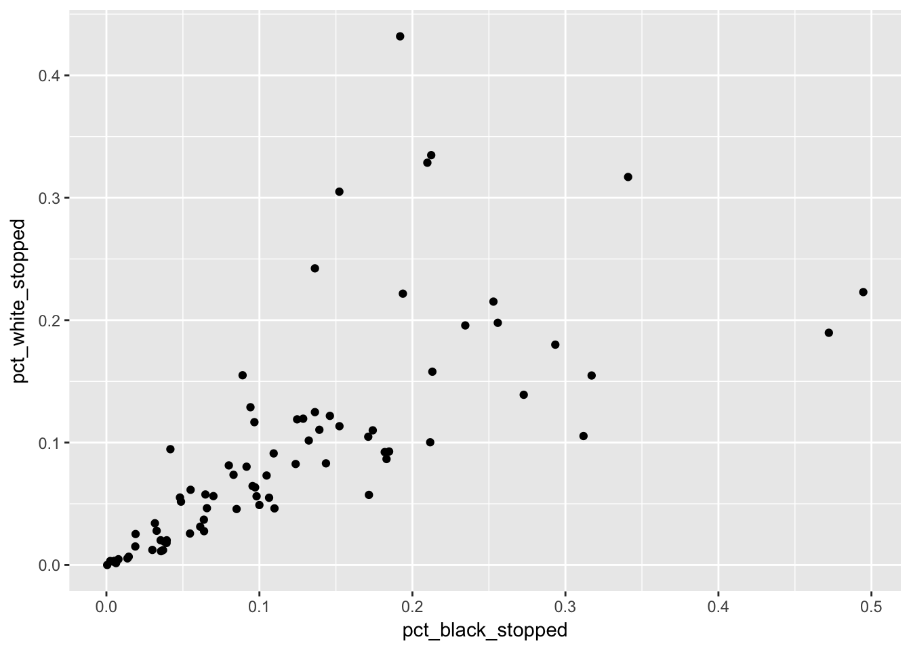
Then we can start modifying this plot to extract more information from it. For instance, we can add transparency (alpha) to avoid overplotting:
MS_demographic %>%
filter(pct_white_stopped < 0.5 & pct_black_stopped < 0.5) %>%
ggplot(aes(x = pct_black_stopped, y = pct_white_stopped)) +
geom_point(alpha = 0.3)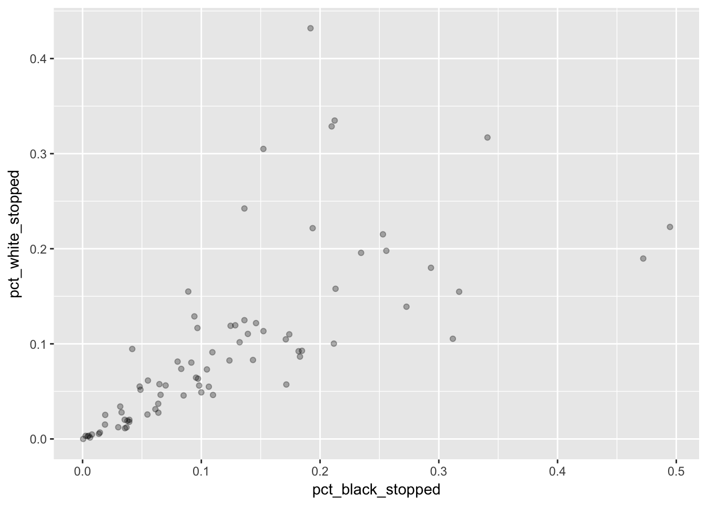
We can also add a color for all the points:
MS_demographic %>%
filter(pct_white_stopped < 0.5 & pct_black_stopped < 0.5) %>%
ggplot(aes(x = pct_black_stopped, y = pct_white_stopped)) +
geom_point(alpha = 0.3, color= "blue")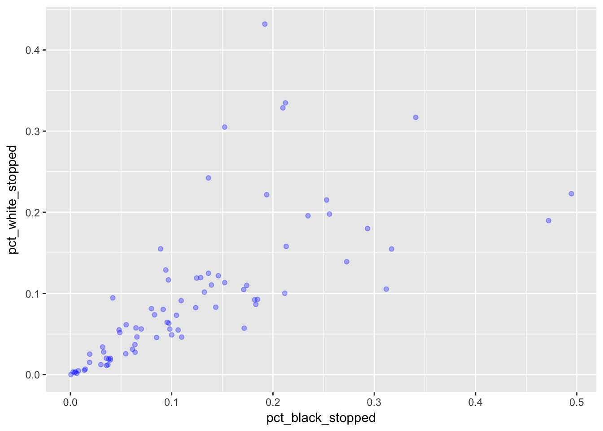
We can add another layer to the plot with +:
MS_demographic %>%
filter(pct_white_stopped < 0.5 & pct_black_stopped < 0.5) %>%
ggplot(aes(x = pct_black_stopped, y = pct_white_stopped)) +
geom_point(alpha = 0.3, color= "blue") +
geom_abline(intercept = 0)
If we wanted to “zoom” into the plot, we could filter to a smaller range of values before passing them to ggplot, but we can also tell ggplot to only plot the x and y values for certain ranges. For this we use scale_x_continuous and scale_y_continuous. You will receive a message from ggplot telling you how many rows it has removed from the plot.
MS_demographic %>%
filter(pct_white_stopped < 0.5 & pct_black_stopped < 0.5) %>%
ggplot(aes(x = pct_black_stopped, y = pct_white_stopped)) +
geom_point(alpha = 0.3, color= "blue") +
geom_abline(intercept = 0) +
scale_x_continuous(limits = c(0, 0.1)) +
scale_y_continuous(limits = c(0, 0.1)) #> Warning: Removed 40 rows containing missing values (geom_point).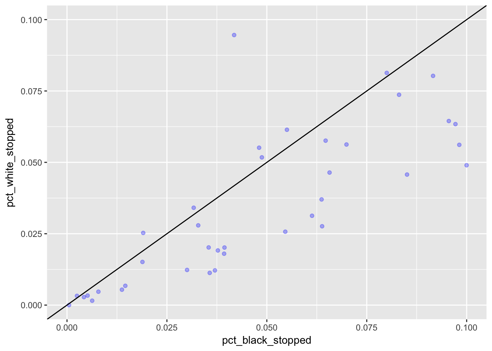
Challenge
Modify the plot above to display different color for both points and abline, and show a different range of data. How might you change the size of the dots?
3.3 Barplot
There are two types of bar charts in ggplot, geom_bar and geom_col. geom_bar makes the height of the bar proportional to the number of cases in each group and counts the number of cases at each x position.
If we wanted to see how many violations we have of each type could say:
ggplot(trafficstops, aes(violation)) +
geom_bar()
As we have seen we could color the bars, but instead of color we use fill. (What happens when you use color?)
ggplot(trafficstops, aes(violation)) +
geom_bar(fill = "green")
Instead of coloring everything the same we could also color by another category, say gender. For this we have to set the parameter within the aes() function, which takes care of mapping the values to different colors:
ggplot(trafficstops, aes(violation)) +
geom_bar(aes(fill = driver_gender))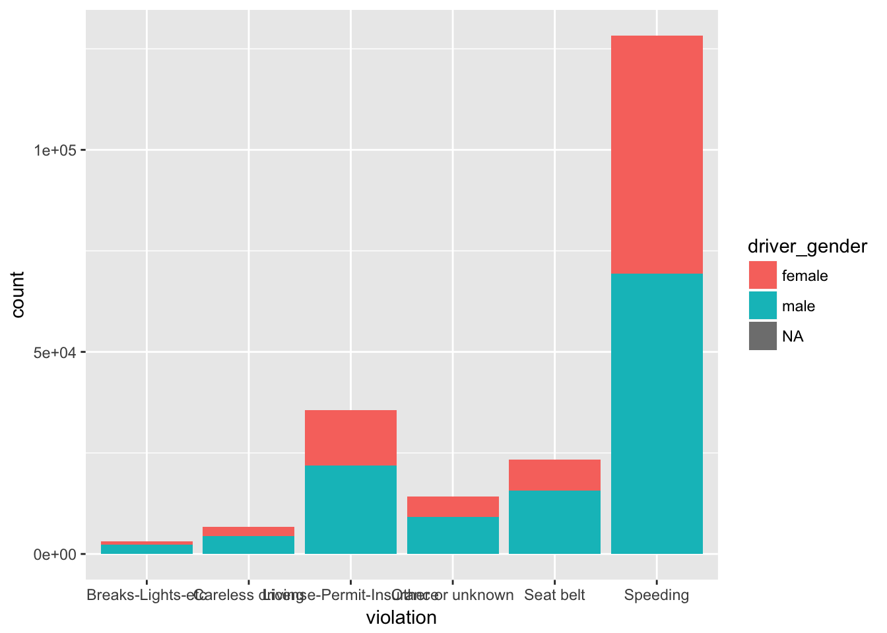
If we wanted to see the proportions within each category we can tell ggplot to stretch the bars between 0 and 1, we can set the position parameter to ‘fill’:
ggplot(trafficstops, aes(violation)) +
geom_bar(aes(fill = driver_gender), position = "fill")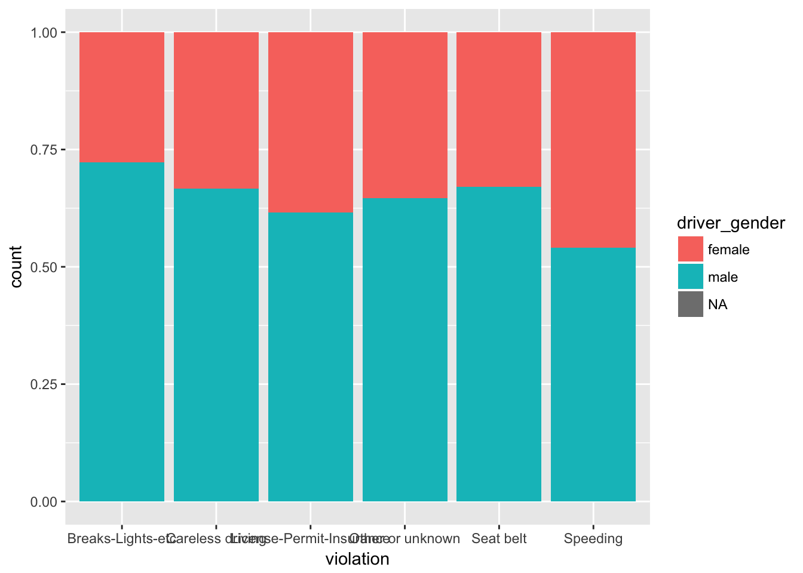
The other type of barchart, geom_col, is used if you want the heights of the bars to represent values in the data. It leaves the data as is. For example, we can use geom_col for a different way of visualizing the data shown in the scatterplot above. For readability I have also flipped the coordinates:
MS_demographic %>%
filter(pct_white_stopped < 0.5 & pct_black_stopped < 0.5) %>%
ggplot(aes(x = county_name, y = pct_white_stopped - pct_black_stopped)) +
geom_col() +
coord_flip()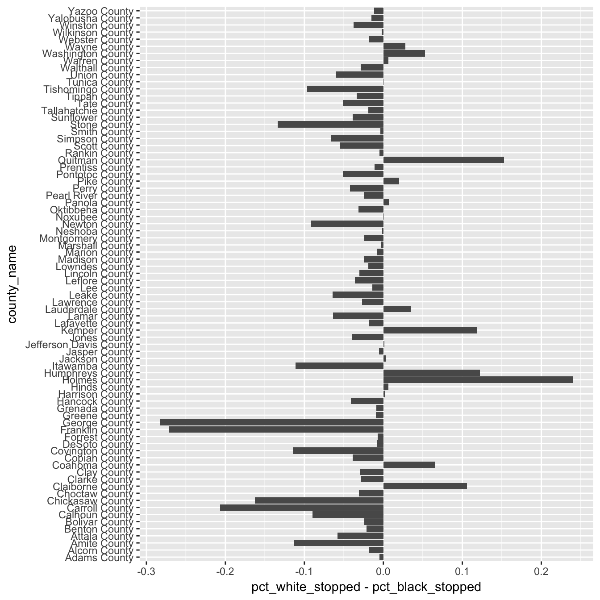
Challenge
Make a barplot that shows for each race the proportion of stops for male and female drivers. How could you get rid of the NAs?
3.4 Boxplot
For this segment let’s extract and work with the stops for Chickasaw County only.
Chickasaw_stops <- filter(trafficstops, county_name == "Chickasaw County")We can use boxplots to visualize the distribution of driver age within each violation:
ggplot(data = Chickasaw_stops, aes(x = violation, y = driver_age)) +
geom_boxplot()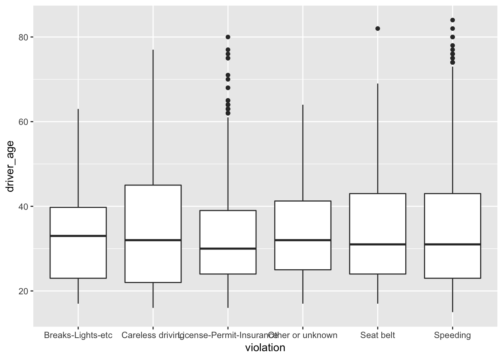
By adding points to boxplot, we can have a better idea of the number of measurements and of their distribution.
ggplot(data = Chickasaw_stops, aes(x = violation, y = driver_age)) +
geom_boxplot() +
geom_jitter()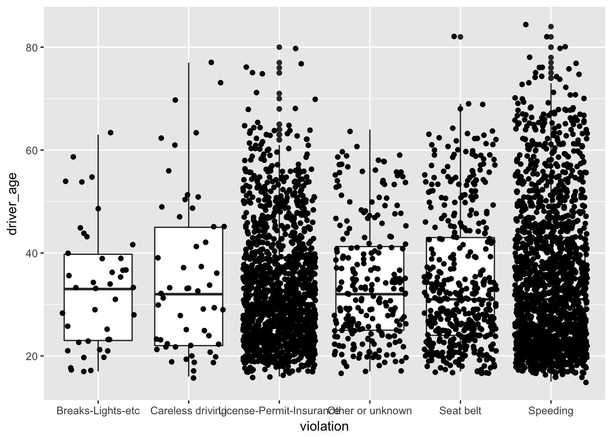
That looks quite messy. Let’s clean it up by using the alpha parameter to make the dots more transparent and also change their color:
ggplot(data = Chickasaw_stops, aes(x = violation, y = driver_age)) +
geom_boxplot() +
geom_jitter(alpha = 0.5, color = "tomato")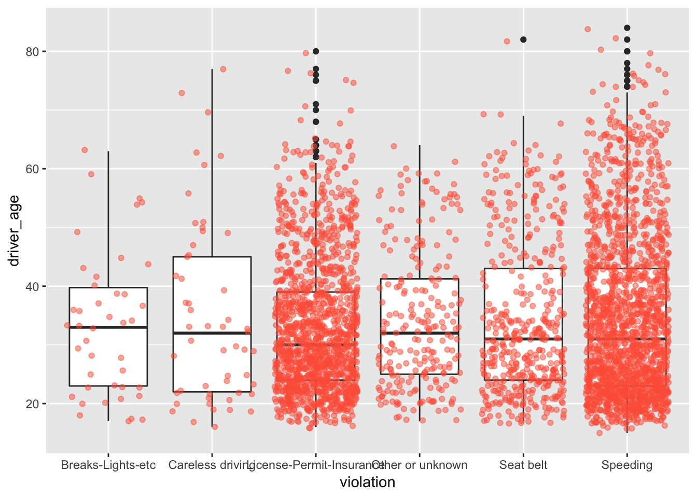
Notice how the boxplot layer is behind the jitter layer. We will change the plotting order to keep the boxplot visible.
ggplot(data = Chickasaw_stops, aes(x = violation, y = driver_age)) +
geom_jitter(alpha = 0.1, color = "tomato") +
geom_boxplot()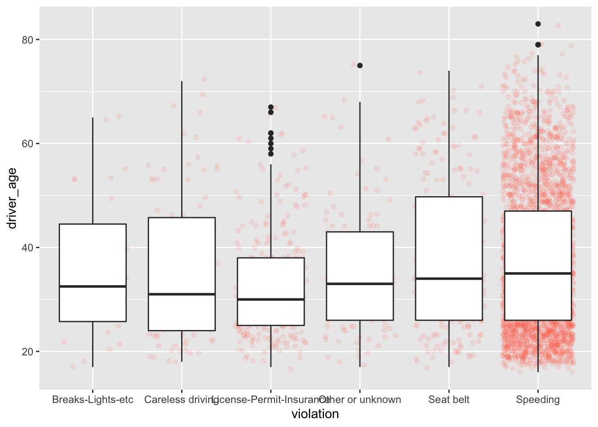
And finally we will change the transparency of the box plot so it does not cover the points:
ggplot(data = Chickasaw_stops, aes(x = violation, y = driver_age)) +
geom_jitter(alpha = 0.1, color = "tomato") +
geom_boxplot(alpha = 0) 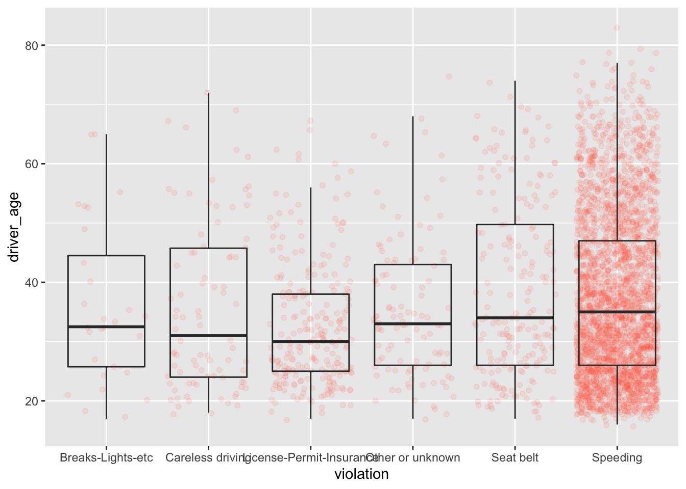
Challenge
Boxplots are useful summaries, but hide the shape of the distribution. For example, if there is a bimodal distribution, it would not be observed with a boxplot. An alternative to the boxplot is the violin plot (sometimes known as a beanplot), where the shape (of the density of points) is drawn.
- Replace the box plot with a violin plot; see
geom_violin().So far, we’ve looked at the distribution of age within violations Try making a new plot to explore the distribution of age for another variable:
- Create the age box plot for
driver_race. Overlay the boxplot layer on a jitter layer to show actual measurements.
3.5 Plotting time series data
To make things a little easer we first convert the date column we plan to use to Date format.
library(lubridate)
class(trafficstops$stop_date)
trafficstops$stop_date <- ymd(trafficstops$stop_date)
class(trafficstops$stop_date)Let’s calculate number of violation per weekday. For better understanding we will label the weekdays. First we need to group the data and count records within each group:
trafficstops %>%
mutate(wk_day = wday(stop_date, label = TRUE)) %>%
group_by(wk_day, violation) %>%
tallyTimelapse data can be visualized as a line plot (with – you guessed it – geom_line()) mapping the days to the x axis and counts to the y axis. So we pipe the output from above into ggplot like this:
trafficstops %>%
mutate(wk_day = wday(stop_date, label = TRUE)) %>%
group_by(wk_day, violation) %>%
tally %>%
ggplot(aes(x = wk_day, y = n)) +
geom_line()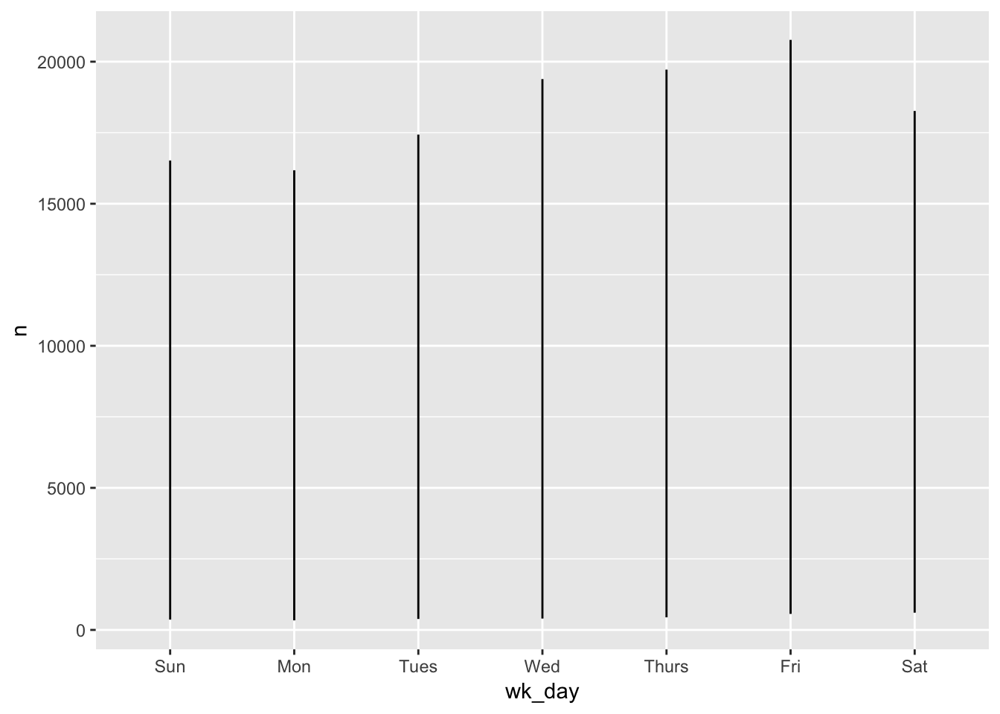
Unfortunately, this does not work because we plotted data for all the violations together. So what ggplot displays is the range of all values for each year in a vertial line. We need to tell ggplot to draw a line for each violation by modifying the aesthetic function to include group = violation:
trafficstops %>%
mutate(wk_day = wday(stop_date, label = TRUE)) %>%
group_by(wk_day, violation) %>%
tally %>%
ggplot(aes(x = wk_day, y = n, group = violation)) +
geom_line()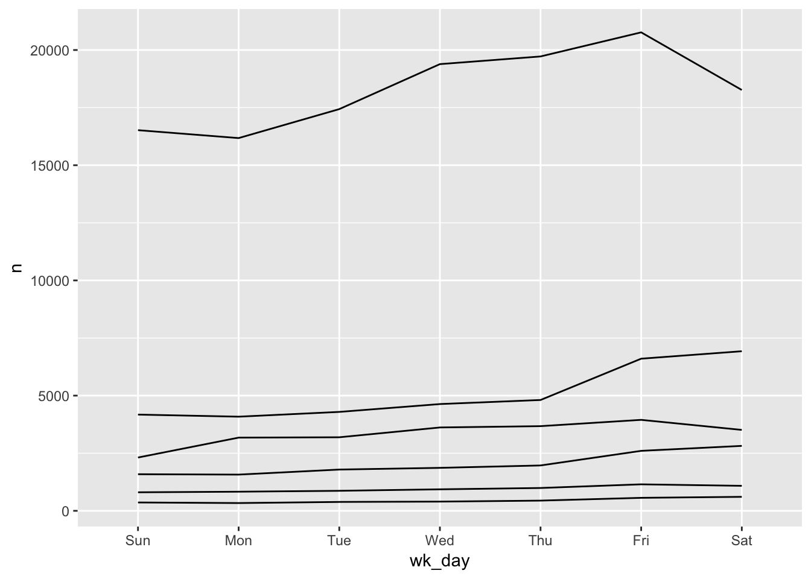
We will be able to distinguish violations in the plot if we add colors. (Colors groups automatically if the variable is numeric).
trafficstops %>%
mutate(wk_day = wday(stop_date, label = TRUE)) %>%
group_by(wk_day, violation) %>%
tally %>%
ggplot(aes(x = wk_day, y = n, group = violation, color = violation)) +
geom_line()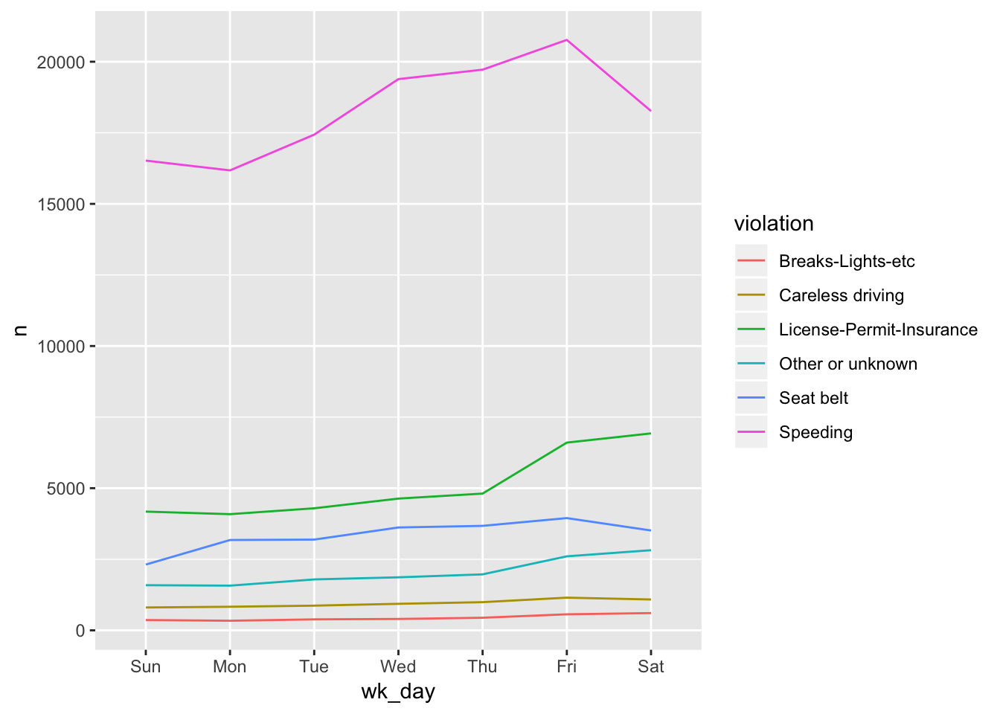
3.6 Faceting
ggplot has a special technique called faceting that allows to split one plot into multiple plots based on a factor included in the dataset. We will use it to make a time series plot for each violation:
trafficstops %>%
mutate(wk_day = wday(stop_date, label = TRUE)) %>%
group_by(wk_day, violation) %>%
tally %>%
ggplot(aes(x = wk_day, y = n, group = violation)) +
geom_line() +
facet_wrap(~ violation)
Now we would like to split the line in each plot by the race of the driver. To do that we need to make counts in the data frame grouped by day, violation, and driver_race. We then make the faceted plot by splitting further by race using color and group (within a single plot):
trafficstops %>%
mutate(wk_day = wday(stop_date, label=TRUE)) %>%
group_by(wk_day, violation, driver_race) %>%
tally %>%
ggplot(aes(x = wk_day, y = n, color = driver_race, group = driver_race)) +
geom_line() +
facet_wrap(~ violation)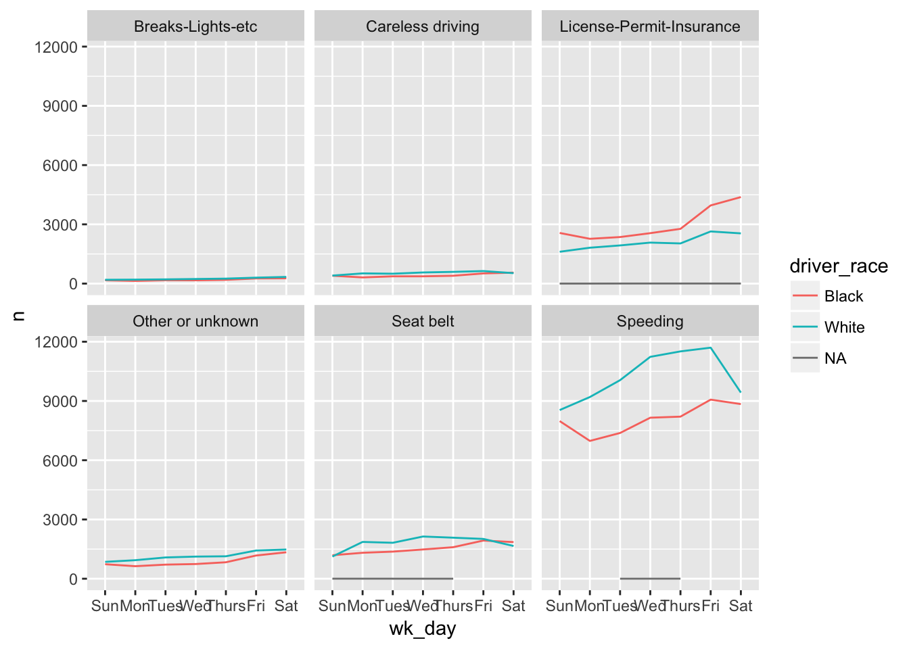
Note that there is an alternative, the facet_grid geometry, which allows you to explicitly specify how you want your plots to be arranged via formula notation (rows ~ columns; a . can be used as a placeholder that indicates only one row or column).
Challenge
Use what you just learned to create a plot that depicts how the average age of each driver for the two recorded ethnicities changes through the week. Hint: make sure you remove the records with driver_age under 16. How would you go about visualizing both lines and points on the plot? How would you split your plot into one per each violation type?
3.7 ggplot2 themes
ggplot2 comes with several other themes which can be useful to quickly change the look of your visualization, for example theme_bw() changes the plot background to white:
trafficstops %>%
mutate(wk_day = wday(stop_date, label=TRUE, abbr=TRUE)) %>%
group_by(wk_day, violation, driver_race) %>%
tally %>%
ggplot(aes(x = wk_day, y = n, color = driver_race, group = driver_race)) +
geom_line() +
facet_wrap(~ violation) +
theme_bw()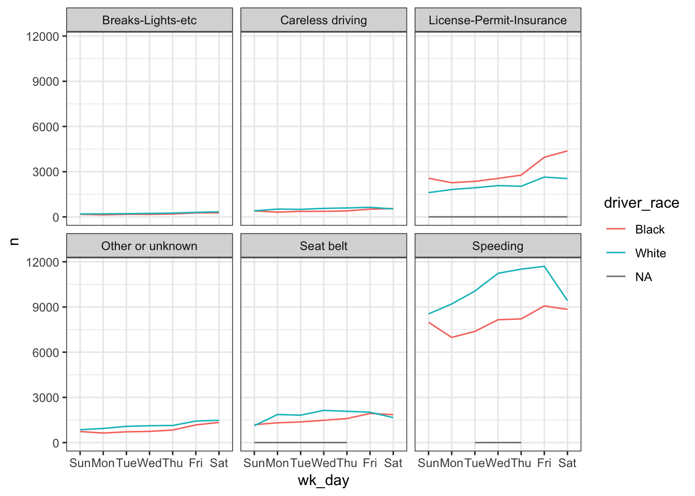
The complete list of themes is available at http://docs.ggplot2.org/current/ggtheme.html. theme_minimal() and theme_light() are popular, and theme_void() can be useful as a starting point to create a new hand-crafted theme.
The ggthemes package provides a wide variety of options (including an Excel 2003 theme). The ggplot2 extensions website provides a list of packages that extend the capabilities of ggplot2, including additional themes.
3.8 Customization
There are endless possibilities to customize your plot, particularly when you are ready for publication or presentation. Let’s look into just a few examples. Before we do that we will assign our plot above to a variable.
stops_facet_plot <- trafficstops %>%
mutate(wk_day = wday(stop_date, label=TRUE, abbr=TRUE)) %>%
group_by(wk_day, violation, driver_race) %>%
tally %>%
ggplot(aes(x = wk_day, y = n, color = driver_race, group = driver_race)) +
geom_line() +
facet_wrap(~ violation)Now, let’s change names of axes to something more informative than ‘wk_day’ and ‘n’ and add a title to the figure:
stops_facet_plot +
labs(title = 'Observed violations per day of week',
x = 'Weekday of observation',
y = 'Number of violations') +
theme_bw()
The axes have more informative names, but their readability can be improved by increasing the font size:
stops_facet_plot +
labs(title = 'Observed violations per day of week',
x = 'Weekday of observation',
y = 'Number of violations') +
theme_bw() +
theme(text = element_text(size=16))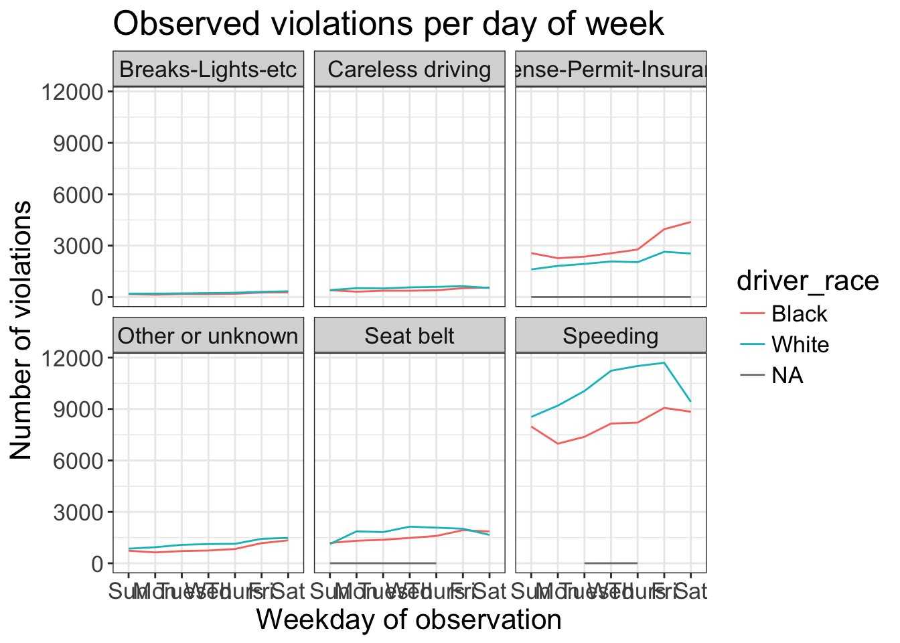
After our manipulations, you may notice that the values on the x-axis are still not properly readable. Let’s change the orientation of the labels and adjust them vertically and horizontally so they don’t overlap. You can use a 90 degree angle, or experiment to find the appropriate angle for diagonally oriented labels:
stops_facet_plot +
labs(title = 'Observed violations per day of week',
x = 'Weekday of observation',
y = 'Number of violations') +
theme_bw() +
theme(axis.text.x = element_text(colour="grey40", size=12, angle=90, hjust=.5, vjust=.5),
axis.text.y = element_text(colour="grey40", size=12),
strip.text = element_text(size=14),
text = element_text(size=16))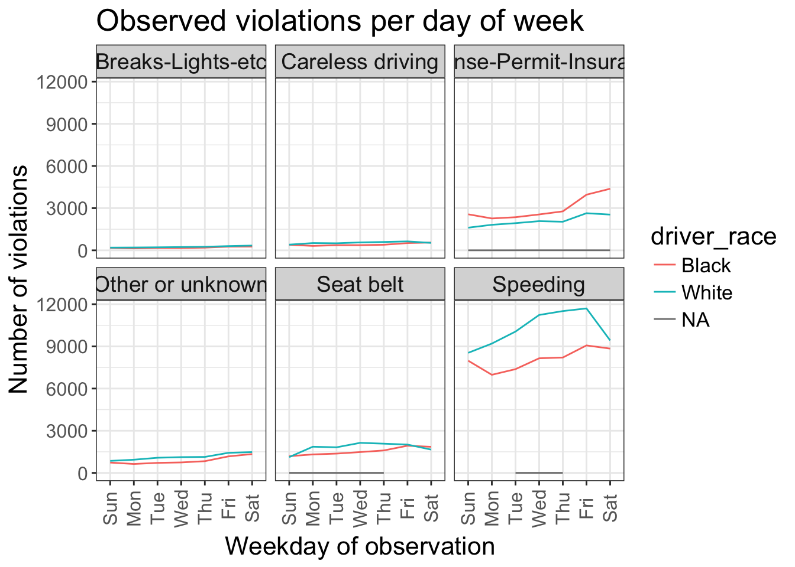
If you like the changes you created better than the default theme, you can save them as an object to be able to easily apply them to other plots you may create:
grey_theme <- theme(axis.text.x = element_text(colour="grey40", size=12, angle=90, hjust=.5, vjust=.5),
axis.text.y = element_text(colour="grey40", size=12), text=element_text(size=16))
ggplot(data = Chickasaw_stops, aes(x = violation, y = driver_age)) +
geom_boxplot() +
grey_theme
Note that it is also possible to change the fonts of your plots. If you are on Windows, you may have to install the extrafont package, and follow the instructions included in the README for this package.
Challenge
With all of this information in hand, please take another five minutes to either improve one of the plots generated in this exercise or create a beautiful graph of your own. Use the RStudio
ggplot2cheat sheet for inspiration.
Here are some ideas:
- See if you can change the thickness of the lines.
- Can you find a way to change the name of the legend? What about its labels?
- Try using a different color palette (see http://www.cookbook-r.com/Graphs/Colors_(ggplot2)/).
After creating your plot, you can save it out to a file in your prefered format. You can change the dimension (and resolution) of your plot by adjusting the appropriate arguments (width, height and dpi):
my_plot <- stops_facet_plot +
labs(title = 'Observed violations per day of week',
x = 'Weekday of observation',
y = 'Number of violations') +
theme_bw() +
theme(axis.text.x = element_text(colour="grey40", size=12, angle=90, hjust=.5, vjust=.5),
axis.text.y = element_text(colour="grey40", size=12),
strip.text = element_text(size=14),
text = element_text(size=16))
ggsave("name_of_file.png", my_plot, width=15, height=10)Note: The parameters width and height also determine the font size in the saved plot.